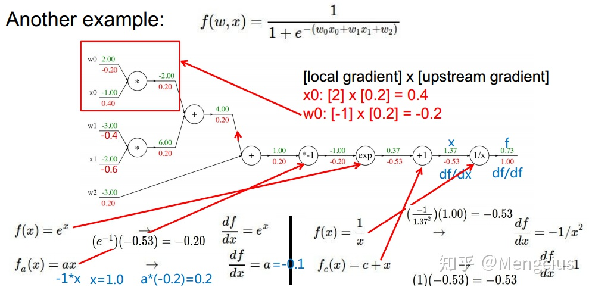
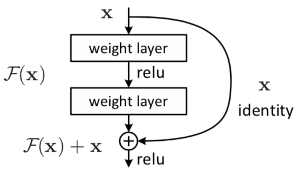

基本知识
模型评估方法
- Accuracy作为指标有哪些局限性？
不平衡分类问题
- ROC和PR曲线是什么？
ROC是false positive rate-- true positive rate曲线，假设二元分类，每个样例对应一个$[0,1]$的概率，根据阈值的不同，输出一组TPR-FPR对应ROC上的一个点；PR不同于ROC的是对正负样本分布敏感FPR=FP/N，TPR=TP/P，TP + FP = P'Precision = TP/P', Recall = TP/P$P'$代表所有预测$P$的数量
- 为什么AUC比precision要好
- 比如一个坏账率，$P$很少，假设一个分类器全部预测成$N$，准确率会很高
- 但如果用AUC描述，由于
TP和FP都是$0$ ($P'=0$嘛)，而全部预测$P$，则TPR=FPR=1，因此这个分类器的ROC就是连接(0,0)和(1,1)，AUC=$0.5$
- 如何计算AUC？
由于AUC的定义就是从正负样本中随机抽取一个，正样本概率大于负样本- 可以穷举所有正-负样本对（一个正样本与一个负样本），逐一比较他们的概率，如果正大于负，取
1，小于取0，等于取0.5，然后相加除以假设全部是1。如果不能穷举则可以通过抽样估算
- 如何划分训练集？如何选取验证集？
- 可以选择交叉验证，特别是数据量小或者不平衡分类问题时，比如我项目里用到的nested cross validation的方法来节省数据量
- 什么是偏差和方差？
偏差是估计期望和真实期望的差距，而方差是估计的离散性，越大代表模型预测越不稳定mean square error$MSE = \mathbb{E}[(\hat \theta_m - \theta)^2] = \text{Bias}(\hat \theta_m)^2 + Var(\hat \theta_m)$ 所以过度追求训练集上的偏差小，容易导致测试集上偏差大（过拟合）
欠拟合和过拟合问题
- 深度学习解决过拟合的方法有哪些?
- 增加训练集，增加数据代表性
- 限制模型表达能力，比如 $l_1, l_2$ 正则化
- dropout通过不断随机删除隐藏层神经元的办法，
用集合学习的策略来抵消不同神经网络的过拟合（类似于cross validation validation）并且减少了神经元之间的联系和对某一些神经元的过度输出（更加robust，进化是增加适应性，而非依赖某一特定环境） - 另一个减小过拟合的办法是
batch normalization，为了解决所谓中间隐藏层数据分布一直随着前一层参数变化而变化的internal covariate shift问题，即对上一层输出先做一个预处理，通过对但是仅仅这样做容易导致数据原本都是正的结果正则化成负的导致在激活层被丢弃，丧失了表达性，因此他引入了两个线性表达式参数将标准数转换到原来的范围？i层j个数据（1个batch）的normalization实现每一个神经元的输入分布都稳定 - 提前结束训练，防止过拟合
- 集合学习（原因见
dropout）
- 解决欠拟合的方法有哪些？
- 增加模型复杂度
- 调整模型初始化方式，在参数为$0$或者$1$的地方容易梯度消失，导致整个神经链失去传导能力
- 调整学习率，可能学习率太大了
- 集合学习
- 深度模型参数调整的一般方法？
- 学习率：小->大->小
- 初始化参数
- 优化器的选择
- 损失函数的选择（
cross entropy, l2 loss ...） - 可视化
- 从小数据大模型入手，先过拟合，再增加数据并根据需要调整模型复杂度
深度学习基础
relu激活层，MSE作为损失函数推导反向传播
先通过前向传播把每个值算出来，再通过反向传播计算每一个神经元的梯度：比如最后一个神经元梯度是1.00, 倒数第二个是$\partial \frac{1}{x} |_{x=1.37}\times 1.00 = -0.53$，记住加法分配，乘法加法，最大值继承等
dropout如何实现反向传播的- 假设每一个神经元以$p$的概率被丢弃，而没被丢弃的神经元信号放大$(1-p)^{-1}$倍，把这个函数定义为
mask。 - 假设一个输入向量$x$，经$p$的
dropout函数变换后得到向量$d$，在前向传播得到误差为$E$(标量)，则反向传播梯度为
- 假设每一个神经元以$p$的概率被丢弃，而没被丢弃的神经元信号放大$(1-p)^{-1}$倍，把这个函数定义为
- 常用的激活函数，导数？
- sigmoid: $\sigma(x) = (1+e^{-x})^{-1}$, $\partial \sigma(x) = \sigma(x)(1-\sigma(x))$，导数取值范围是$(0,0.25]$，很容易梯度消失
- tanh: $\tanh(x) = (e^x+e^{-x})^{-1}(e^x-e^{-x})$, $\partial \tanh(x) = 1-\tanh^2(x)$，导数取值范围是$[0,1)$
- Relu: $f(x) = x * \mathbb{1}_{x\geq 0}, \partial f(x) = \mathbb{1}_{x\geq 0}$，导数取值要不$1$要不$0$，且在$x=0$不可导
- leaky Relu: $g(x) = x \text{ if } x \geq \lambda \text{ else } \lambda x$, $\partial g(x) = 1 \text{ if } x \geq \lambda \text{ else } \lambda$，为了解决
Relu函数在$x < 0$梯度始终是$0$而设计的相关见这里
梯度消失与梯度膨胀，以及解决措施
根据链式法则，如果每一层神经元对上一层输出的偏导乘上权重结果都小于$1$，则经过多层传播后，误差对输入层的偏导会趋于$0$，这就是梯度消失，相反，如果每层都大于$1$，则误差对输入层的偏导趋于无穷大，这就是梯度爆炸- 当梯度很大，会出现函数值跳来跳去的情况，一种解决办法是调整学习率，另一种办法叫做
Gradient Clipping梯度裁剪，如果梯度的$l_2$范数$\| g \|_2 $大于阈值$c$，则把梯度缩小$\frac{c}{\| g \|_2}$倍，另一种防止梯度过大的方法是在损失函数中加入regularization限制权值的范数 - 另外
batchnorm也被用于解决梯度问题，正向传播中的$f_2 = f_1 (w^Tx + b)$在反向传播中$\partial f_2 / \partial w = (\partial f_2 / \partial f_1)\cdot x$因此这一层的输入会影响梯度的消失和爆炸。batchnorm通过对每一层输出规范为均值和方差一致的办法，消除了下一层输入带来的放缩影响 何凯明大神提出的残差网络结构，用堆叠的神经网络去拟合一个
residual mapping$F(x) = H(x) - x$ 这样如果残差网络梯度消失，至少identity mapping能保证无损地传播梯度
第一个因子$\partial \text{loss} / \partial x_L$代表损失函数到达$L$的梯度，然后$l \rightarrow L-1$都是
residual net